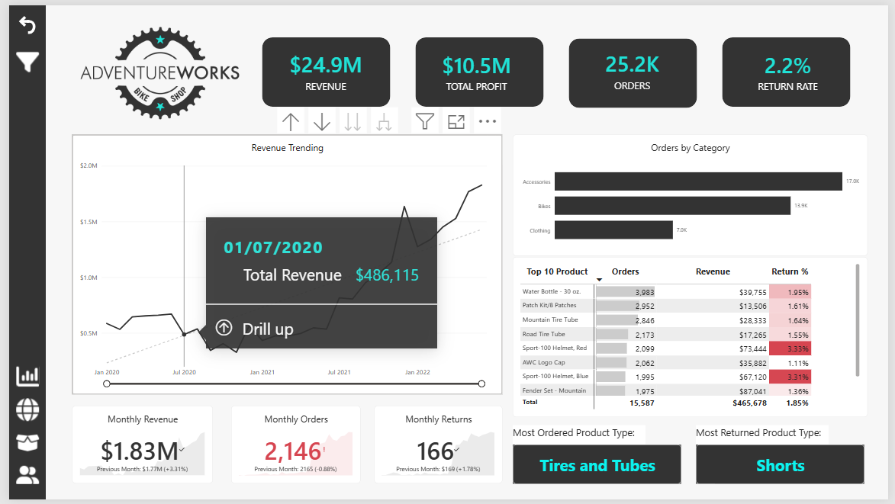
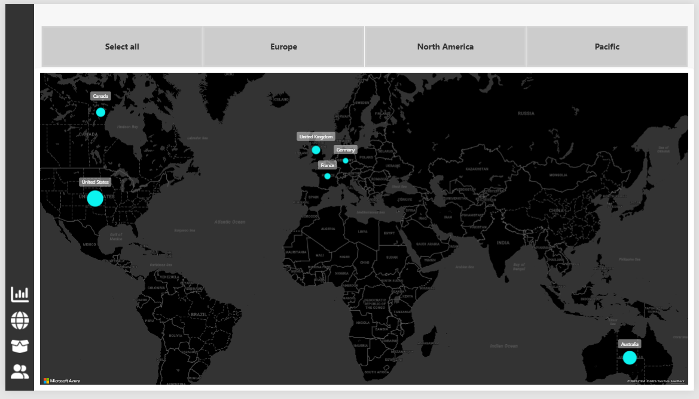
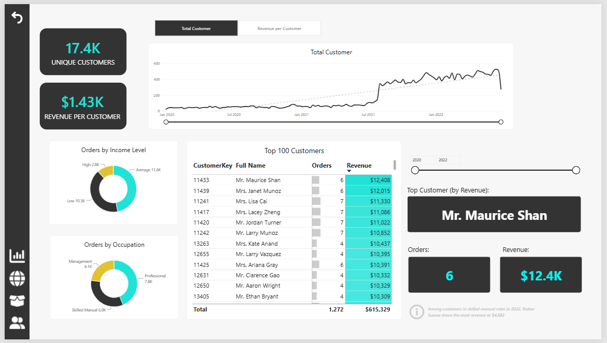
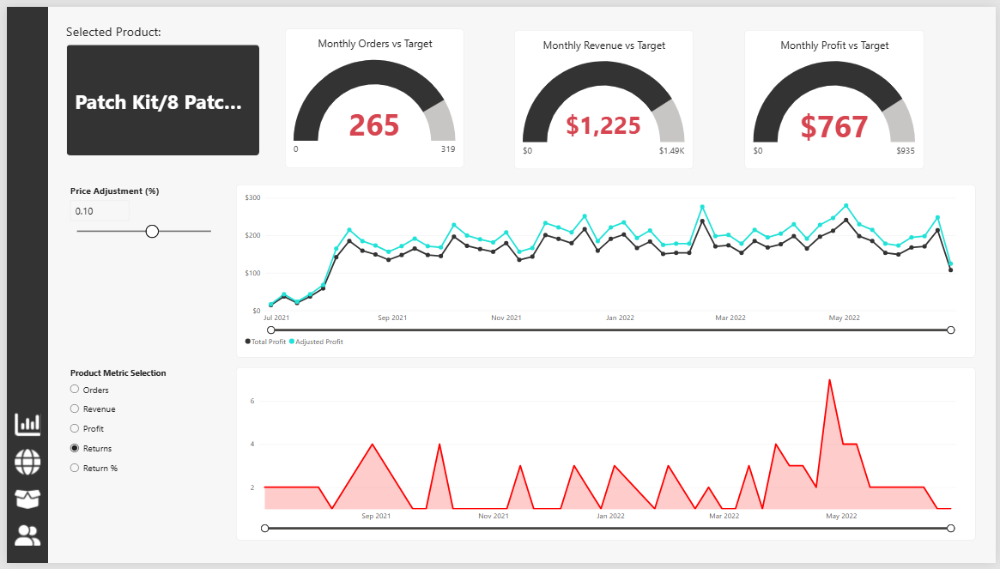

Business performance / Project 02
When more revenue isn't the whole story.
Revenue rose. Orders fell. I used Power BI to explore what sat behind the headline, then looked at products, returns, markets, and customers to identify the next questions a business could investigate.
A guided Maven Analytics course project and my second business analysis portfolio entry. Recommendations are proposals; no business change or financial impact was measured.
Explore the findings ↓ Watch dashboard video ↓ Project on GitHub ↗
01 / Business questions
From healthcare patterns to business performance.
My first portfolio project explored missed medical appointments. For this second project, I wanted to build my Power BI skills while learning how to interpret commercial data: not just whether a number increased, but what else I needed to know before recommending an action.
I started with ten core CSVs, combined three years of sales, and prepared lookup and returns data in Power Query. I then connected two fact tables with six dimensions and built an interactive report with executive, map, product, and customer pages.
- Was revenue growth accompanied by more orders?
- Did the most frequently purchased category also drive revenue?
- Which products deserved a closer look at returns?
- Did countries with more orders also generate more value?
- What could customer and product views tell me—and what could they not establish?
Source-data totals for the supplied dataset. Product profit is revenue less product cost, not net income. The unit return ratio is aggregate returned units divided by sold units.
02 / Revenue and order volume
More revenue did not mean more orders.
In June 2022, revenue reached $1.827M, up 3.31% from May. Yet distinct orders fell from 2,165 to 2,146, a decline of 0.88%.
Looking at those metrics together led me to revenue per order. It increased from $816.83 to $851.35 (+4.23%). The headline growth was accompanied by higher average order value, rather than higher order volume.
Was the increase associated with a shift towards more expensive products, more units per basket, or another change? I would break the difference down by product and quantity before recommending a pricing or acquisition action.
June versus May 2022. Figures calculated from the supplied sales quantities and product lookup prices. They show an observed pattern, not its cause.
03 / Product contribution
The busiest category was not the revenue engine.
Accessories appeared in 16,983 orders, more than Bikes at 13,929. If I looked only at order counts, Accessories would appear to lead. But Bikes generated $23.64M—94.89% of revenue.
This changed how I read the category chart. Order popularity and revenue contribution answer different questions. The business was highly dependent on Bikes for revenue, while Accessories appeared in many baskets.
Monitor Bikes performance and availability closely. Explore relevant accessory bundles with bike purchases, measuring attachment rate and incremental profit rather than assuming that more bundled items will improve results.
Full sales period. Category counts overlap because a single order can contain products from several categories; they should not be summed as unique total orders.
04 / Product returns
A higher return ratio is a signal to investigate.
The overall unit return ratio was 2.17%. Two visible products stood above it: Sport-100 Helmet, Red at 3.33% and Blue at 3.31%.
| Product | Units sold | Units returned | Ratio |
|---|---|---|---|
| Sport-100 Helmet, Red | 2,099 | 70 | 3.33% |
| Sport-100 Helmet, Blue | 1,995 | 66 | 3.31% |
I would prioritise a review of their patterns by period and territory, then seek return reasons or quality records. The current dataset cannot tell me whether fit, product condition, customer expectations, or another factor explains the difference.
The report's Return Rate divides returned units
by sold units. Total Returns counts return
records. These are different measures, and mixing them
would change the interpretation.
Returns are not linked to original orders or purchase cohorts. These aggregate ratios are not an individual customer's probability of returning an item.

05 / Geographic performance
Fewer orders could still contribute similar revenue.
The United States led with 8,700 orders and approximately $7.94M revenue. Australia recorded 6,060 orders yet generated approximately $7.42M.
Australia therefore contributed similar revenue with fewer orders across the full dataset. The map alone would not show that difference in order value.
Compare revenue per order, product mix, and product profit alongside geographic volume before allocating market budgets. These data do not establish acquisition costs, market potential, or the returns on additional marketing spend.

06 / Customer contribution
A top-customer list starts a question, not a campaign.
The data contains 17,416 purchasing customers, with approximately $1.43K revenue per customer. The report's highest-revenue listed customer contributed $12,408 across six orders.
This view helped me move from total sales to customer contribution. However, a ranking alone does not tell me who is likely to return, whether a customer is profitable, or whether a retention offer would change behaviour.
Examine repeat-purchase behaviour, recency, and revenue concentration before designing a retention programme. Use income and occupation as descriptive context rather than evidence that a particular group should receive an offer.
Customer-level return attribution is not available: Returns Data has no CustomerKey or original order identifier.

07 / Interactive product exploration
Less visual clutter. More useful questions.
I learned to use gauge charts to compare monthly orders, revenue, and profit with targets. In this project, targets are set at 110% of previous-month performance. They provide a consistent benchmark, rather than a target agreed with a real stakeholder.
A field parameter lets the bottom chart switch between orders, revenue, profit, returns, and return rate. Instead of adding five separate charts, I gave the user a way to choose the question.
A numeric range parameter supplies a price-adjustment input for comparing baseline and adjusted profit. This is a calculation scenario: it retains observed quantities and existing costs. A higher scenario profit does not demonstrate that customers would continue buying at the new price.
Navigation, contextual tooltips, and customer metric selection helped me practise making a report easier to explore. These are report-design features; they do not replace the evidence needed for a business decision.
Dashboard walkthrough
See the report in action.
Watch a recorded demonstration of the report's navigation, filters, metric selection, and price-adjustment scenario. Select Play to start.
The embedded video could not be loaded. Try opening the MP4 directly using the link below.
This is a recorded walkthrough. The video shows the interactions, but it does not allow you to filter the report.
08 / Recommendations
Turn a pattern into a measurable next step.
- Explain the change in order value. Decompose the May-to-June movement by product mix and units per order. Track order count and revenue per order together.
- Review revenue concentration. Monitor Bikes performance and stock availability. If testing accessory bundles, evaluate incremental profit and attachment rate.
- Investigate helmet returns. Review temporal and geographic patterns, then collect return reasons. Assess financial materiality before choosing an intervention.
- Compare markets beyond volume. Add revenue per order and product contribution to the geographic view before discussing budget changes.
- Validate customer opportunities. Analyse repeat purchases and concentration before proposing a retention campaign.
These are proposed investigations. No intervention, conversion improvement, revenue uplift, or cost saving was measured in this project.
09 / My learning journey
Building the report changed how I questioned the data.
This project extended my Power BI skills from preparation to modelling, DAX, and interactive design. The PBIX contains 44 measures, 12 calculated columns, and three calculated tables. I organised 42 measures in a dedicated Measure Table to keep the calculations easier to find.
The analytical lesson was just as valuable: a growing KPI can conceal a different movement elsewhere. I learned to check the denominator, understand what a measure counts, and explain what I would need to investigate before acting.
Read my step-by-step learning journals
10 / Sources and limitations
Patterns to investigate, with assumptions made visible.
Sources: the uploaded Maven Analytics AdventureWorks CSVs, saved PBIX expressions, and original dashboard screenshots. Quantitative observations were independently checked against the supplied sources. Monetary values use the dataset's dollar-denominated presentation; no currency conversion was performed.
Revenue uses quantity multiplied by product lookup price; product profit subtracts product lookup costs and does not represent net income. Returns are aggregated separately from sales. Customer source keys include repeats and an empty value, which require reconciliation with the final query. This is not a complete audit of every model property, transformation, or interaction.
The report was built through a guided Maven Analytics course. The accompanying interpretation documents my learning; it is not a client engagement or a claim of independent dashboard innovation. All visual evidence on this page uses my supplied dashboard screenshots, not newly generated charts.
Explore the full project ↗